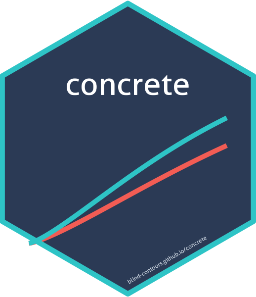

Package index
-
formatArguments()makeITT()print(<ConcreteArgs>) - formatArguments
-
doConcrete()print(<ConcreteEst>)plot(<ConcreteEst>)print(<ConcreteOut>) - doConcrete
-
getOutput()plot(<ConcreteOut>) - getOutput
-
getTmleDiagnostics() - Extract TMLE convergence diagnostics
-
getRMST() - Restricted mean survival time and cause-specific life-years lost
-
targetRMST() - Directly target the restricted mean survival time
-
getRelativeEfficiency() - Relative efficiency of a covariate-adjusted vs unadjusted analysis
-
getWinRatio() - Covariate-adjusted restricted win ratio, win odds, and net benefit
-
makeEstimand()print(<ConcreteEstimand>)applyIntercurrentEvent() - Specify an ICH E9(R1) estimand and apply an intercurrent-event strategy
-
senseCensoring() - Tipping-point sensitivity analysis for informative censoring
-
concrete-packageconcrete - One-step continuous-time Targeted Minimum Loss-Based Estimator (TMLE) for outcome-specific absolute risk estimands in right-censored survival settings with or without competing risks